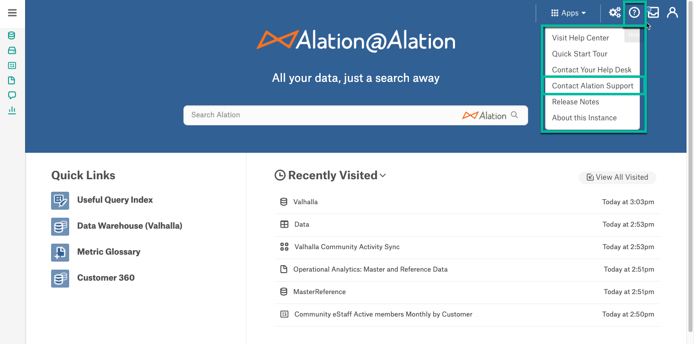
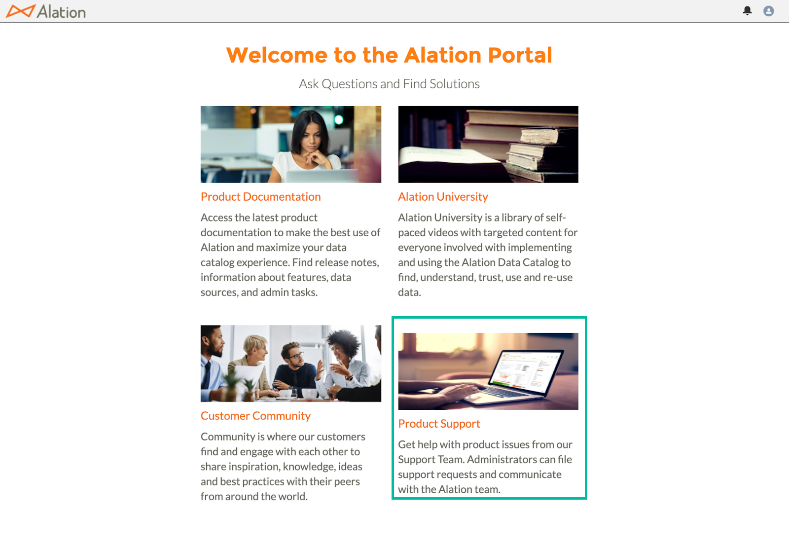
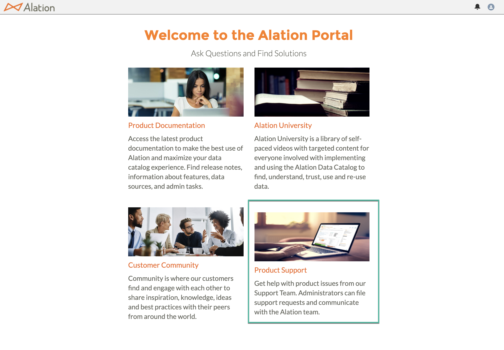
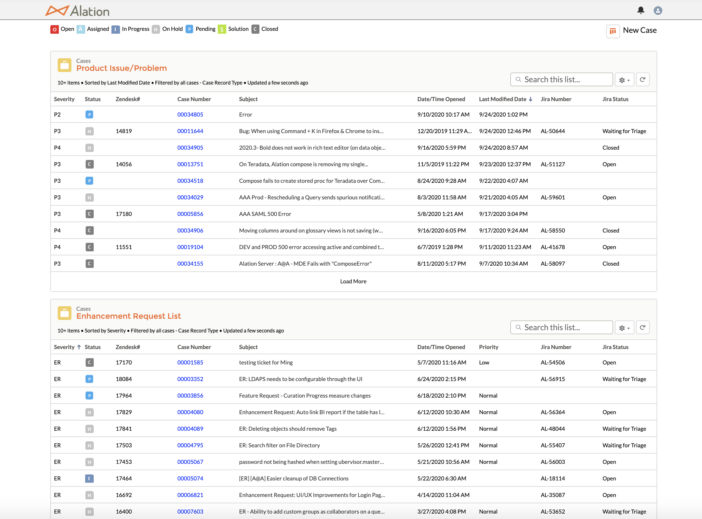
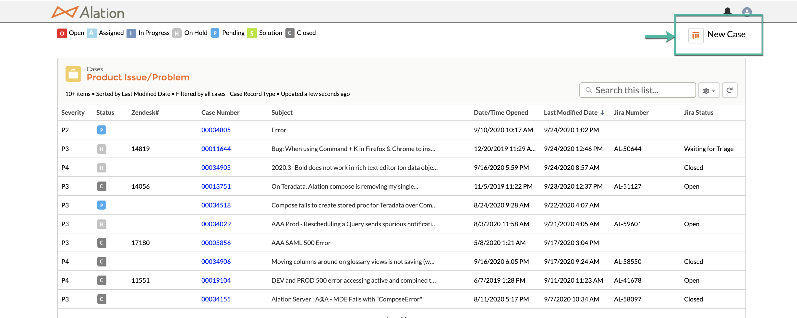
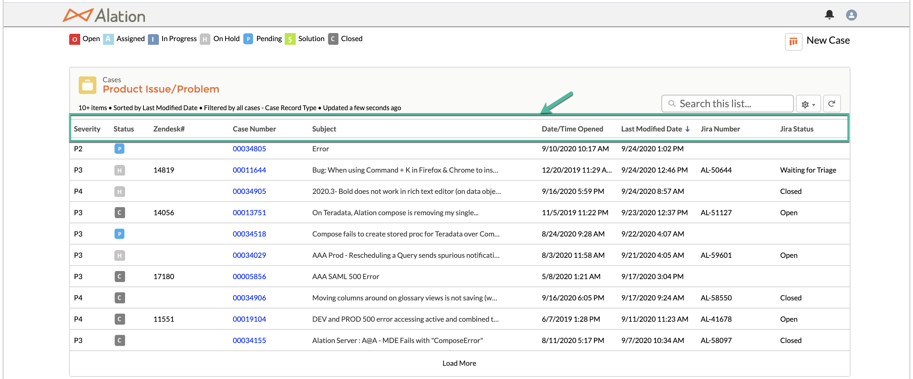
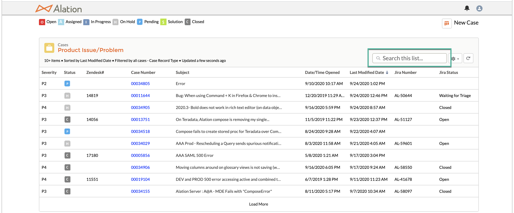
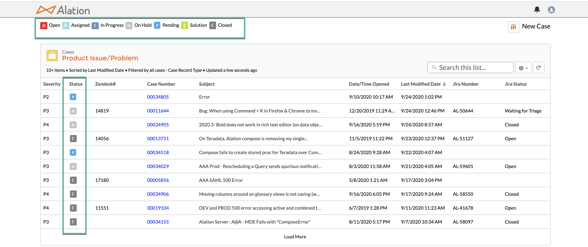

Alation Portal¶
Alation Cloud Service Applies to Alation Cloud Service instances of Alation
Customer Managed Applies to customer-managed instances of Alation
What is the Alation Portal?¶
The Alation Portal provides designated Alation admin users with a single access point to get help with product issues, find solutions and documentation, learn more about the product, and collaborate with Alation Community users.
Users and Permissions¶
Who Can Access the Alation Portal?¶
The Alation Portal access is provided to an Alation administrator of a customer account.
An administrator is identified as part of Alation onboarding and provisioned with an account on the Alation Portal site.
By default, there is a limit of four admin users per account. A maximum of eight admin users are allowed.
Add or Remove Admins for an Account¶
Access to the Alation Portal has to be granted by an existing admin. To add or remove admins, an existing designated admin must submit a support case.
Difference Between Admin Users and Secondary Contacts¶
Admins can create new support cases and have visibility into all cases created for an account.
Secondary contacts are non-admin users that can be cc’d in a support case.
Secondary contacts cannot create new support cases.
To add or remove users to or from the secondary contacts list, an existing designated admin must submit a support case.
Access the Alation Portal¶
To access the Alation Portal, in your production instance of the Alation catalog:
Click the Help icon on the upper right of the main toolbar and in the menu that opens, click Contact Alation Support.

Note
The Contact Alation Support link is only available to the designated admins.
Note
If you do not see the Contact Alation Support option, you may be on an older release or the Support links have not been set up on your instance. You can access the Alation Portal directly by going to https://alation.force.com. There are patch releases available for older Alation versions that provide direct access from an instance. Contact Alation Support if you need access to a patch release.
Enter your credentials and log in.
After logging in, you are taken to the Alation Portal. Click the Product Support tile that automatically logs you into the Service Cloud tool. You will be taken directly to your case list view, where you can see your existing cases and enhancement requests.

{kind=link}
Reset Your Alation Portal Password¶
You can reset the Alation Portal password on the login page.
On the Alation Portal login page, click on the Forgot your password? link.
Enter your Username and click Reset Password.
If the user is found, an email will be sent to the email address associated with this username with a password reset link. If the user is not found, send an email to support.access@alation.com.
Click the link in the password reset email:
Follow instructions to create your new password:
Once the password reset is complete, you will be directed to the Alation Portal landing page.
{kind=link}
{kind=link}
{kind=link}
{kind=link}
{kind=link}
Service Cloud - Alation’s Case Management Tool¶
What is Service Cloud?¶
Service Cloud is Alation’s case management tool where designated Alation admin users can submit and manage their support cases.
Access Service Cloud¶
Perform the following steps to access Service Cloud:
After logging in to the Alation Portal, click on Product Support.
This automatically logs you into the Service Cloud tool. You will be taken directly to your case list view, where you can see your existing cases.

Create a Support Case in Service Cloud¶
Support cases in Service Cloud can be created only by designated Alation admin users. Perform the following steps to create a support case in Alation Portal:
Log in to the Alation Portal.
From the Alation Portal landing page, go to Product Support tile.
On the default case list view page, click the New Case button.
Select the type of case you want to create and click Next:
Product Issue - A single incident or an error, for which the cause is unknown which results in an undesired outcome.
Product Question - A general question, usually a “how-to” inquiry or with a product documentation focus.
Legacy Kloudio - A case related specifically to Kloudio.
In the Case Information section, complete the sections for Preferred Support Region, Subject, Description, Steps to Reproduce, Error Message, and “When was this issue first seen”.
Enter a short description in the Subject field.
A more detailed explanation of the issue can be entered in the Description field, including steps that led to the issue and any information on error messages you saw.
When you begin entering in text for the subject and description, watch how the list of items on the right side updates to show the most relevant content to those keywords you typed in. Essentially, the subject and description fields on the left now automatically search for you through the resources we show on the right side of your screen. You can easily click on the eyeball next to each result to get a quick view of the item. This allows you to view the content without leaving the case creation page at all. If it looks like it might be helpful to read in depth, simply click the title link and this will open the item in a new tab, keeping your case creation page open in the original tab.
For details about the Preferred Support Region field, see Alation Portal: Support Regions.
In the Product Issue Detail section, select the appropriate Server Name. These are the registered licensed Alation instances for your account. The version will auto-populate with the licensed version that reflects in your Customer Portal.
Select the Severity. See Severity Definitions for Product Problem/Issue Case Types below for additional details.
Select the Problem Area that best identifies the issue. Different sub-selections are dependently available per option.
You will be provided the option to upload files for screen captures, files, and logs on the bottom of the page.
We hope that by providing you with highly relevant information to your issue or question on the right hand side of the case creation screen, you will be able to find the answers you are looking for without having to create a case. If you’ve found your answer, you can click the Cancel button at the bottom of the page. And of course, if you still need to submit your case, complete the relevant fields and information and simply click the Submit button and our team of experts will assist you.
{kind=link}
{kind=link}
{kind=link}
Severity Definitions for Product Problem/Issue Case Types¶
P1 – Production use of the Alation software is stopped or severely impacted so that the customer cannot reasonably continue work using Alation. In addition to the foregoing, a Severity P1 service request has one or more of the following characteristics:
System hangs indefinitely, causing unacceptable or indefinite delays for resources or response.
System crashes repeatedly after multiple restart attempts.
P2 – Production use of the Alation software is severely impacted. The status is not mission critical, but the features are unavailable with no acceptable workaround.
P3 – Production use of the Alation software is impacted where a non-core capability is interrupted or operating at reduced capacity and no reasonable workaround is available. Alternatively, test or development use of Alation software is severely or completely impacted. The classification is subject to Alation’s approval.
P4 – Production use of the Alation software is impacted where a non-core defect is discovered, but not impacting Customer’s reasonable use of the Alation software. Alternatively, test or development use of Alation software is interrupted or operating at reduced capacity.
Manage Your Support Cases in Service Cloud¶
Case List View¶
After you log in to Service Cloud, you are automatically taken to your case list view homepage, which displays all your support cases.
The following fields are displayed:
Severity - Applicable to Product Problem/Issue cases. The severity is assigned by the requestor during the case creation.
Status - See Case Status Definitions below for a definition of each status.
Case Number - Assigned automatically by Service Cloud. Always refer to this number when interacting with the Support team.
Subject - Brief description of the issue provided by the requestor.
Date/Time Opened - When the case was created.
Last Modified Date - Reflects the date and time of the last update made to the case.
Jira Number and Jira Status - Internal tracking number and status of a case escalated to the Engineering team.
Sort & Search your Cases¶
Cases can be sorted by any of the fields displayed in your case list view. To sort, click on a column header.

To easily find a case, you can use the Search field on the case list homepage. You can also search using your Service Cloud case number.

Case Status Definitions¶
The current status for your cases is displayed in two places:

In the Status column in your case list home page
In the Case Status bar within each case
Below are the definitions of each status:
New – Automatically assigned to a case after it is submitted. It will remain in this status until it is assigned to a Technical Support Engineer (TSE).
Assigned – The case has been assigned to a TSE.
In Progress – A case moves to In Progress after the assigned TSE makes a public initial response to the Case. It remains in this status as long as a TSE is actively working on a case.
On Hold – A case is put into On Hold status when the customer is not available to engage with Support or when there is pending action from a team outside of Support (applicable to Support Escalations, and Bugs).
Pending – Action is pending from the customer (install a patch, make an upgrade, provide logs, etc).
Solution – A solution or a workaround has been provided to the customer.
Closed – Customer has validated the issue has been resolved.